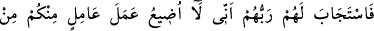
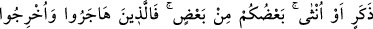
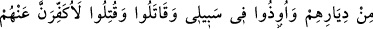
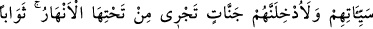
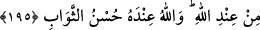

“Alay etmiyorum. Ben her istediğimi yapmaya kadirim.”[176]
Anlatılır ki: Mârûf Kerhî’nin ebeveyni hıristiyandı. Onu hıristiyan öğretmene
gönderdiler. Öğretmen Mârûf’a: “Allah, üçün üçüncüsüdür de!” dedi, fakat Mârûf:
“Hayır O, tektir, sameddir” dedi. Bunun üzerine öğretmen Mârûf’a bir tokat vurdu.
Mârûf kaçtı. Mârûf’un ebeveyni: “Mârûf geri gelirse hangi dîni benimsemiş olduğunu
görürsek görelim, ona uyacağız” dediler. İslâm dînini benimsemiş olarak gelince, onlar
da müslüman oldu.
Hz. Peygamber (s.a.) şöyle buyurmaktadır: “Hiç biriniz yoktur ki, kıyâmet günü
Allah kendisiyle arada hiç bir tercüman olmaksızın konuşacak olmasın. Kişi, sağına
bakacak yaptıklarından başka bir şey görmeyecek. Sonra soluna bakacak orada da
yaptıklarından başka bir şey göremeyecek. Bütün insanlar kendisine yönelecek. Yarım
hurmayla dahî olsa, kendini ateşten koruyabilen bunu yapsın!”[177]
Anlatılır ki: Yaşlı bir kâfir kadın, kış günleri kuşlara yem atıp doyururdu. Bunu gören
Zünnûn Mısrî: “Allah, düşmanlarının bu tür hareketlerini kabul etmez” dedi. Zünnûn,
daha sonra bu kadını müslüman olmuş bir halde Kâbe’de gördü. Kadın Zünnûn’a:
“Allah Teâlâ, bende gördüğün o haslet sâyesinde bana müslüman olmamı nasip etti.”
dedi.
Keremsiz adam, adam değildir
Ağaçtan, belki taştan da beterdir.
Meyve vermeyen kısır ağacı
Kesse lâyıktır baltacı.
Allah Teâlâ Hazretleri, cümlemizi cehennemden koruyup iyilerle ve cömertlerle
beraber cennete soksun.
195. Bunun üzerine Rableri, onların duâlarını kabul etti. (Dedi ki:) Ben, erkek